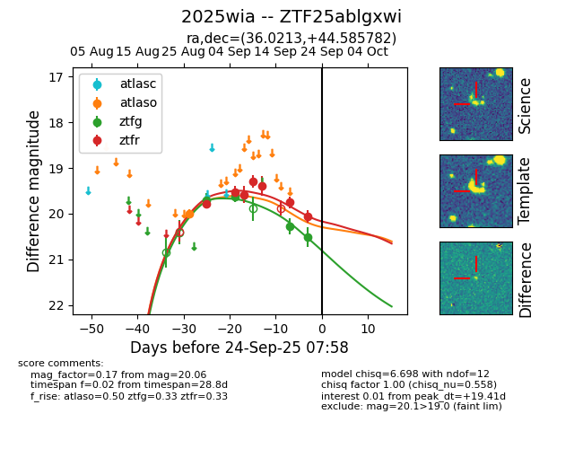
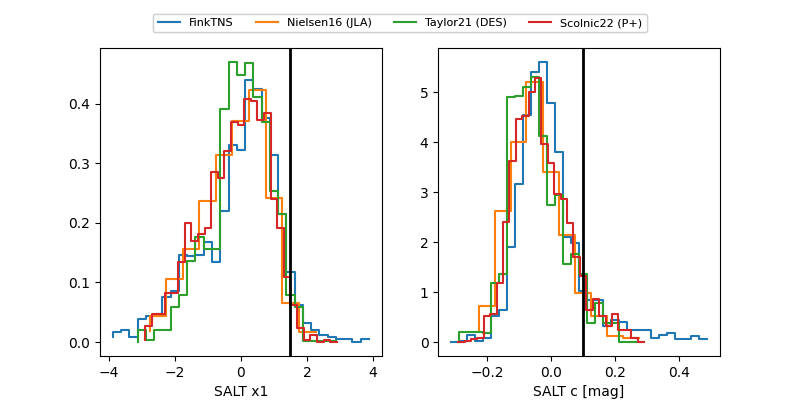

FINK: ZTF25ablgxwi
Lasair: ZTF25ablgxwi
ALeRCE: ZTF25ablgxwi
TNS: 2025wia
YSE: 2025wia
ZTF25ablgxwi (ztf,fink)
2025wia (tns,yse)
equatorial (ra, dec) = (36.0213,+44.58578)
galactic (l, b) = (139.8093,-15.22856)


last atlaso=20.00, ztfg=20.51, ztfr=20.06
1 atlaso, 4 ztfg, 7 ztfr detections